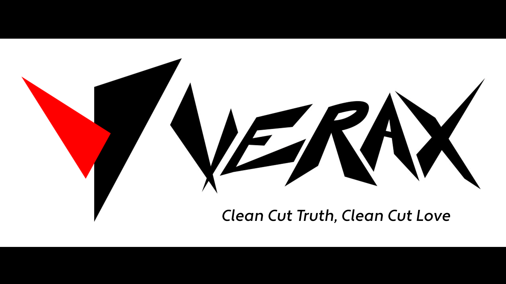

Verax: Logo Reveals
Motion Design | Graphic Design
Overview
In Motion Design class, we were tasked with creating two logo reveals for an imagined brand. The logo reveals had to be complete with a logo, storyboards, sounds effects, and a slogan.
Tools
AfterEffects: motion graphics application
Photoshop: graphics editor
Purpose
To design a logo for imagined brand “Verax” and create two logo reveals to represent the
character of the brand: sharp, edgy, and sleek.
While the logo is a visual manifestation
of what the brand stands for, the logo reveals would be used after videos and advertisements
to solidify branding and identity.